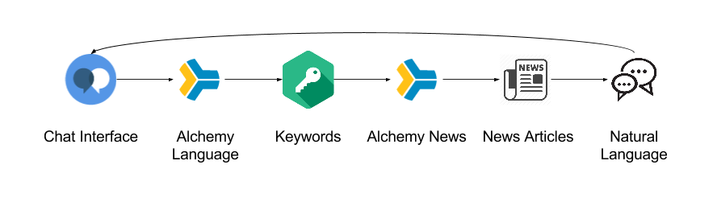

Polichat
Matt Klawonn, Spencer Norris, Lucas Volle
Motivation
Politics are fresh in the mind of the public consciousness, and there's quite a bit of noise surrounding political candidates. It would be nice to be able to easily find how a candidate feels about an issue.
Overview

With Polichat the goal is to ask about a candidates political stances via natural language.
Components
The flow of Polichat.
Chat Interface
function parseInput(payload, data, res) {
var currDate = new Date();
var parameters = {
extract: 'entities,keywords,dates',
text: data.input.text,
anchorDate: currDate.toISOString().substring(0, 10) + ' 00:00:00'
};
alchemy_language.combined(parameters, function(err, response) {
.
.
.
Keywords are extracted from the chat interface using the Alchemy Language API.
Article Retrieval
function getRelations(payload, data, params, res) {
// make a call to alchemy data news with concept data
alchemy_data_news.getNews(params, function(err, news) {
if (err) {
console.log('Alchemy news error:', err);
data.output.text += '
' + 'Alchemy news error: ' + JSON.stringify(err);
} else {
.
.
.
Articles are searched for via the AlchemyNews relation search.
Position Extraction
var results = news.result.docs.filter(function(doc){
//Filter relations for each doc
var _results = doc.source.enriched.url.relations.filter(function(relation){
var hasSubj = false;
var hasObj = false;
//try{
//Iterate over all entities in the relation's subject group
if(relation.subject.entities)
if(relation.subject.entities.length > 0)
relation.subject.entities.forEach(function(entity){
//If the entity is disambiguated and shares a name, then it must be the subject
.
.
.
Positions are parsed by searching for non-empty results with subjects, verbs, and objects.
Results
Showed it possible to match natural language to queries for document retrieval, and showed it possible to extract relationships between entities in these documents.
Demo
Questions?
Team Contributions
- Lucas Volle: Chat Interface, Chat Parsing
- Spencer Norris: Article Retrieval, Position Extraction
- Matt Klawonn: Article Retrieval, Presentation